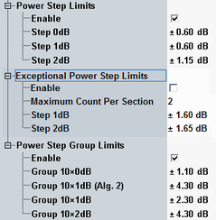

When the UE receives transmit power control (TPC) commands in the downlink, it is expected to adjust its output power in accordance with the received commands. A TPC command orders the UE to increase or decrease the output power by a certain amount, the expected step size.
3GPP defines upper limits for the power step error, depending on the expected step size. Standard allows two exceptions for several steps. In addition to error limits for single power steps, there are also error limits for groups of 10 or 50 power steps.
The configuration dialog allows you to set symmetrical error limits for single power steps, exceptions and power step groups, depending on the expected step size.

The test requirements are defined in 3GPP TS 34.121, section 5.4.2 "Inner Loop Power Control in the Uplink". An overview is provided in the following tables. The default limit values correspond to the test requirements.
Expected step size | Error limit | Allowed step size | Relevant for test step |
|---|---|---|---|
0 dB | ±0.6 dB | -0.6 dB to +0.6 dB | A, B, C |
±1 dB | ±0.6 dB | +0.4 dB to +1.6 dB | B, F |
-0.4 dB to -1.6 dB | C, E | ||
±2 dB | ±1.15 dB | +0.85 dB to +3.15 dB | H |
-0.85 dB to -3.15 dB | G |
Expected step size | Error limit | Allowed step size | Relevant for test step |
|---|---|---|---|
0 dB | identical with allowed step size for single TPC steps | B, C | |
±1 dB | ±1.6 dB | -0.6 dB to +2.6 dB | B, F |
+0.6 dB to -2.6 dB | C, E | ||
±2 dB | ±1.65 dB | +0.35 dB to +3.65 dB -0.35 dB to -3.65 dB | H G |
Expected step group size / algorithm | Error limit | Allowed Step group size | Relevant for test step |
|---|---|---|---|
10 x 0 dB = 0 dB (alg. 2) | ±1.1 dB | -1.1 dB to +1.1 dB | A |
10 x ±1 dB + 40 x 0 dB = ±10 dB (alg. 2) | ±4.3 dB | +5.7 dB to +14.3 dB | B |
-5.7 dB to -14.3 dB | C | ||
10 x ±1 dB = ±10 dB (alg. 1) | ±2.3 dB | +7.7 dB to +12.3 dB | F |
-7.7 dB to -12.3 dB | E | ||
10 x ±2 dB = ±20 dB (alg. 1) | ±4.3 dB | +15.7 dB to +24.3 dB | H |
-15.7 dB to -24.3 dB | G |
The multi-evaluation measurement provides additional power control tests and limit checks, see "Power Control Limits".